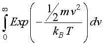
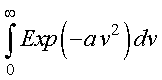
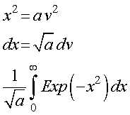
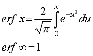
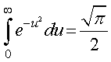
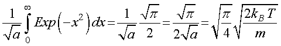

熱平衡において，10kBT以上のエネルギー状態でいる確率
さて，気体の分子の運動と理想気体の状態方程式からエネルギー等分配則を求めましたが，分子の運動エネルギーのボルツマン分布からも求めてみましょう．
以下の式の計算を行ってみましょう．

簡単のため，
とおけば，

となります．変数変換して，

ここで，誤差関数を持ち出して，

から，

となります．従って，

と生物学におけるランダムウォーク の日本語版のp.73の(5.8)式の分母となります．
もどる